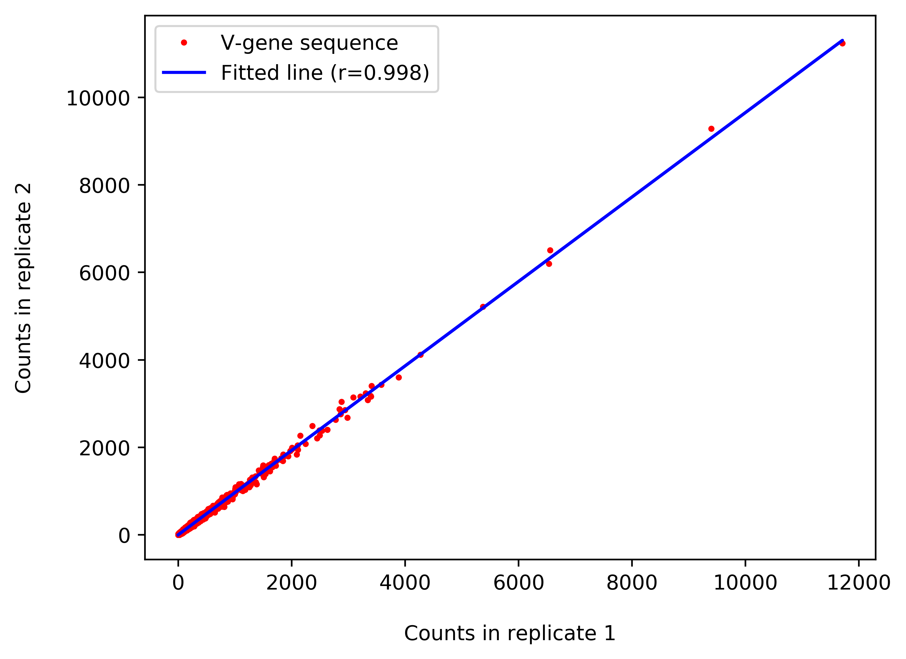

The distribution of isotypes in a specific NGS replicate
The number of non-synonymous (Ka) and synonymous (Ks) mutations and their ratios (Ka/Ks), based on comparison to the germline genes. The Y axis is the number of mutations per codon. Each dot represents a unique variable region nucleotide sequence.
The frequency of the number of base pair mutations in a NGS replicate. The X axis represents the number of mutations (both synonymous and non-synonymous) defined by comparison to the germline genes.
The distribution of CDR3 length (number of amino acids) in a NGS replicate.
The distribution of the V(D)J combinations in a NGS replicate. Shown are the frequencies of the various combinations between the V and J subgroups.
Clonal expansion. The X axis shows the most prevalent 100 clones. For each clone, the Y axis represents the number of variable region amino-acid sequences supporting each clone (in blue) and the number of contributing unique variable region amino-acid sequences (in green).
Sequence logo of one of the top (i.e., most expanded) clones.
Pearson correlation between two NGS replicates. Each dot represents a unique variable region amino-acid sequence. The X and Y axes indicate the number of times each such sequence appears in the first and the second replicate, respectively

Venn diagram showing the number of variable region amino-acid sequences that are shared among NGS replicates.